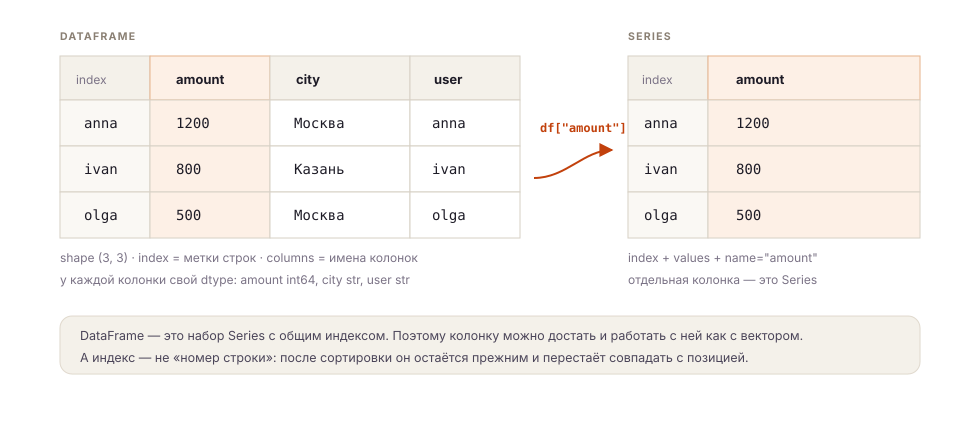

Series и DataFrame: таблица с оглавлением Индекс, колонки и свой тип у каждой колонки
pandas начинается с двух объектов: колонка с подписями (Series) и таблица
(DataFrame). Понять, что такое индекс и почему он не равен номеру строки, —
значит избежать половины будущих ошибок.
Словарь главы — если забыли термины
- Series
- Одномерные значения с индексом: колонка таблицы.
- DataFrame
- Таблица из колонок с общим индексом строк.
- индекс
- Подписи строк. Не то же самое, что номера позиций.
- dtype
- Тип колонки:
int64,float64,str. - read_csv
- Загрузка CSV в DataFrame с разбором типов.
01Зачем это backend-разработчику
- Выгрузки и отчёты. CSV из админки, экспорт заказов, сводка по дням — pandas делает это за десяток строк.
- Проверка данных. Быстро посмотреть форму, типы, пропуски и диапазоны — до того, как данные попадут в базу.
- Мостик к SQL. Таблица pandas — почти таблица в базе: колонки, строки, типы. Дальше это сравнение станет привычкой.
- Собеседование: «чем Series отличается от DataFrame», «что такое индекс», «loc или iloc» — базовые вопросы по pandas.
02Ассоциация-якорь: книга с оглавлением
DataFrame — это таблица с оглавлением. Колонки — это разделы, а индекс — подписи строк, по которым можно быстро найти нужную.
Series — одна страница из этой книги. У неё те же подписи (индекс), но значения только из одной колонки. Поэтому Series — это не «просто список», а список с оглавлением.
03Ассоциативный ряд: восемь звеньев
- pd.Seriesзначения + индекс
- pd.DataFrameтаблица из колонок
- indexподписи строк, не номера
- columnsимена колонок
- dtypesтип у каждой колонки
- shape(строки, колонки)
- read_csvзагрузка и разбор типов
- head/infoпервый взгляд на данные
04Схема: из чего состоит таблица

05Как это устроено на самом деле
Series — это массив NumPy плюс индекс плюс имя. DataFrame —
набор Series с общим индексом. Поэтому колонки имеют собственные типы, а операции по колонке
остаются векторными, как в NumPy.
| Понятие | Что это | Аналог в SQL |
|---|---|---|
| index | подписи строк | ключ / уникальный идентификатор |
| columns | имена колонок | поля таблицы |
| dtype | тип колонки | тип поля |
| shape | (строки, колонки) | COUNT(*) и число полей |
| values | ndarray с данными | сами строки |
pandas 3: строки — это str
В третьей версии строковые колонки получают тип str, а не object.
Это делает операции быстрее и предсказуемее, но меняет привычные проверки: df["city"].dtype
теперь str.
values может потерять типы
df.values сводит все колонки к одному массиву. Если в таблице есть и числа,
и строки, получится dtype=object — самый медленный и опасный вариант.
Для работы с числами лучше брать конкретную колонку.
06Лаборатория: запустить и увидеть
Фрагменты файла 12_series_dataframe_lab.py.
CSV читается из строки, чтобы не зависеть от файлов на диске.
Шаг 1. Series: значения плюс индекс
import pandas as pd s = pd.Series([1200, 800, 500], index=["anna", "ivan", "olga"], name="amount") print(s) print(s.index.tolist(), s.dtype, s.name)
Шаг 2. DataFrame из словаря
df = pd.DataFrame({
"user": ["anna", "ivan", "olga"],
"amount": [1200, 800, 500],
"city": ["Москва", "Казань", "Москва"],
})
print(df.shape, df.columns.tolist(), df.index.tolist())
print(df.dtypes)
Шаг 3. Колонка — это Series
col = df["amount"] print(type(col).__name__, col.index.tolist(), col.name)
Шаг 4. Чтение CSV
import io csv = """user,amount,city anna,1200,Москва ivan,800,Казань olga,500,Москва """ df2 = pd.read_csv(io.StringIO(csv)) print(df2.shape, df2.size) print(df2.head(2))
Шаг 5. Первый взгляд: info и describe
df2.info() print(df2.describe())
info() отвечает на вопросы «сколько строк, какие типы, есть ли пропуски»,
describe() — «какие диапазоны у числовых колонок».
Шаг 6. Новая колонка — векторная операция
df2["amount_with_tax"] = df2["amount"] * 1.2 print(df2[["user", "amount", "amount_with_tax"]])
Шаг 7. Индекс — не номер строки
shuffled = df2.sort_values("amount")
print(shuffled)
print(shuffled.index.tolist())
После сортировки порядок строк изменился, а метки остались при своих значениях. Поэтому
iloc[0] — это «первая строка результата», а не «строка с индексом 0».
Подробно — в главе 13.
07Мост: та же таблица в SQL
DataFrame и таблица базы
-- dataframe: колонки user, amount, city SELECT user, amount, city FROM orders; -- те же колонки и строки SELECT COUNT(*) FROM orders; -- df.shape[0] SELECT amount FROM orders; -- df["amount"]
pandas читает SQL напрямую
import pandas as pd
df = pd.read_sql("SELECT user, amount FROM orders", con=engine)
df.to_sql("report", con=engine, if_exists="replace", index=False)
read_sql возвращает DataFrame с колонками из запроса, to_sql —
записывает таблицу обратно. Это ровно тот мост, который понадобится в части V.
08Шесть ошибок, на которых спотыкаются
После сортировки или фильтрации метки сохраняются, а позиции меняются. df.loc[0] и df.iloc[0] дают разные строки.
reset_index(drop=True).При смешанных колонках df.values становится object — медленно и опасно.
df[["amount"]].to_numpy().Коды, ИНН и даты могут прочитаться как числа или строки не тем способом — и потерять ведущие нули.
dtype и parse_dates при чтении.Добавление строк по одной — квадратичная стоимость и потеря типов.
pd.DataFrame(rows) один раз.Одинарные скобки дают Series, двойные — DataFrame с одной колонкой. Дальше операции ведут себя по-разному.
shape — (строки, колонки), size — общее число ячеек.
shape[0], а не size.09Вопросы с собеседования
Чем DataFrame отличается от Series?
Series — одномерный объект: индекс плюс значения. DataFrame — двумерный: набор Series с общим индексом и именами колонок.
Что такое индекс pandas?
Подписи строк, по которым можно обращаться через loc. Индекс не обязан быть числовым и не обязан совпадать с позицией строки.
Почему индекс не всегда совпадает с номером строки?
Сортировка, фильтрация и объединения сохраняют исходные метки. Позиции пересчитываются, метки — нет.
Чем df["salary"] отличается от df[["salary"]]?
Первое — Series, второе — DataFrame с одной колонкой. Форма разная, и это влияет на операции и присваивания.
Что возвращает df.info()?
Сводку: число строк, имена колонок, количество непустых значений и dtype. Первый инструмент диагностики таблицы.
Чем shape отличается от size?
shape — кортеж (строки, колонки), size — произведение, общее число ячеек.
Что такое dtype колонки и почему они разные?
Каждая колонка — отдельный массив со своим типом: int64, float64, str, datetime. Разные типы — норма для таблицы.
Как быстро получить общее представление о новых данных?
head(), info(), describe(), shape, dtypes — минимальный набор первого взгляда.
10Три задачи: сначала своя попытка
01 Таблица из словаря
Создайте DataFrame с колонками name, age, city из трёх строк. Выведите shape, dtypes и первые две строки.
Показать решение
df = pd.DataFrame({
"name": ["anna", "ivan", "olga"],
"age": [22, 31, 25],
"city": ["Москва", "Казань", "Москва"],
})
print(df.shape, df.dtypes.astype(str).to_dict())
print(df.head(2))
02 Новая колонка
Добавьте колонку с годовой зарплатой, если в таблице есть месячная.
Показать решение
df["salary_year"] = df["salary_month"] * 12
Что важно. Операция векторная: цикл не нужен. Новая колонка появляется в конце таблицы.
03 Портрет данных
Загрузите CSV и напишите пять вызовов, которые дают первое представление о данных.
Показать решение
df = pd.read_csv("data.csv")
print(df.shape, df.columns.tolist())
print(df.dtypes)
print(df.head())
df.info()
print(df.describe())
Что важно. Эти пять вызовов ловят 80% проблем: не тот разделитель, не тот тип, лишняя пустая колонка, подозрительные диапазоны.